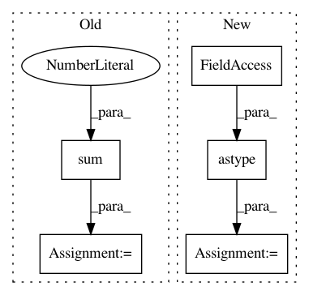

0c0cc3ac899ad88ea2804706f2adf106ccca3f71,scanpy/preprocessing/_highly_variable_genes.py,,_highly_variable_genes_seurat_v3,#Any#Any#Any#Any#Any#Any#Any#,19
Before Change
ranked_norm_gene_vars = np.argsort(np.argsort(norm_gene_vars, axis=1), axis=1)
median_ranked = np.median(ranked_norm_gene_vars, axis=0)
num_batches_high_var = np.sum(
ranked_norm_gene_vars >= (adata.X.shape[1] - n_top_genes), axis=0
)
df = pd.DataFrame(index=np.array(adata.var_names))
df["highly_variable_nbatches"] = num_batches_high_var
df["highly_variable_rank"] = median_ranked
df["variances_norm"] = np.mean(norm_gene_vars, axis=0)
After Change
ranked_norm_gene_vars = np.argsort(np.argsort(-norm_gene_vars, axis=1), axis=1)
// this is done in SelectIntegrationFeatures() in Seurat v3
ranked_norm_gene_vars = ranked_norm_gene_vars.astype(np.float32)
ranked_norm_gene_vars[ranked_norm_gene_vars >= n_top_genes] = np.nan
median_ranked = np.nanmedian(ranked_norm_gene_vars, axis=0)
num_batches_high_var = np.sum(
(ranked_norm_gene_vars < n_top_genes).astype(int), axis=0
)
df = pd.DataFrame(index=np.array(adata.var_names))
df["highly_variable_nbatches"] = num_batches_high_var
df["highly_variable_rank"] = median_ranked
df["variances_norm"] = np.mean(norm_gene_vars, axis=0)
In pattern: SUPERPATTERN
Frequency: 3
Non-data size: 5
Instances
Project Name: theislab/scanpy
Commit Name: 0c0cc3ac899ad88ea2804706f2adf106ccca3f71
Time: 2020-07-29
Author: adamgayoso@users.noreply.github.com
File Name: scanpy/preprocessing/_highly_variable_genes.py
Class Name:
Method Name: _highly_variable_genes_seurat_v3
Project Name: KrishnaswamyLab/PHATE
Commit Name: b912ae50a0ca1766eceb062973e2952997285fac
Time: 2018-04-04
Author: scottgigante@gmail.com
File Name: Python/phate/phate.py
Class Name: PHATE
Method Name: von_neumann_entropy
Project Name: mne-tools/mne-python
Commit Name: beaff02d91a80c2cf12e626d47b3f1678188472d
Time: 2020-04-22
Author: larson.eric.d@gmail.com
File Name: mne/source_space.py
Class Name:
Method Name: _get_volume_label_mask